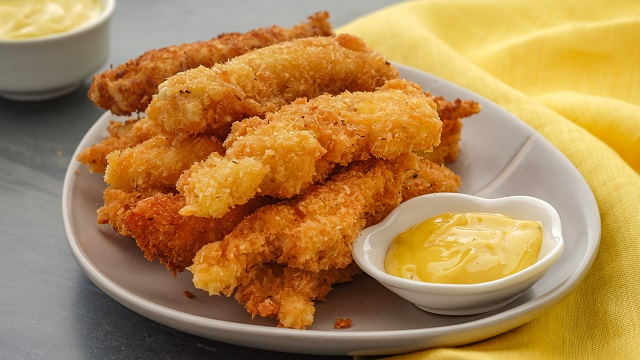

|
My Favorite Dish: Chicken Fillet Recipe |
|  |
|
Chicken Fillets are fillets of meat sliced horizontally from a chicken breast, such that it makes a “steak” of a shape
that can be ideal to fit on a bun, etc. They are available in many different forms of preparation, such as raw, cooked, breaded, breaded and spiced, etc. Many retailers confuse the terms, Fillets and Cutlets. The essential different is that cutlets are thinner because they have been pounded or formed to make them thinner. Sometimes you will see the phrase “thigh fillets” but what they actually mean is “thigh cutlets.” Occasionally you will also see the word “fillets” used to mean “strips of boneless chicken” for stir fries, etc, in which the fillet is cut into long thin strips. What they really mean is “Chicken Breast Strips.” |
| Ingredients: |
Chicken
|
| Preparation: |
Chicken
|
Original Recipe by Ricardo Cuisine |